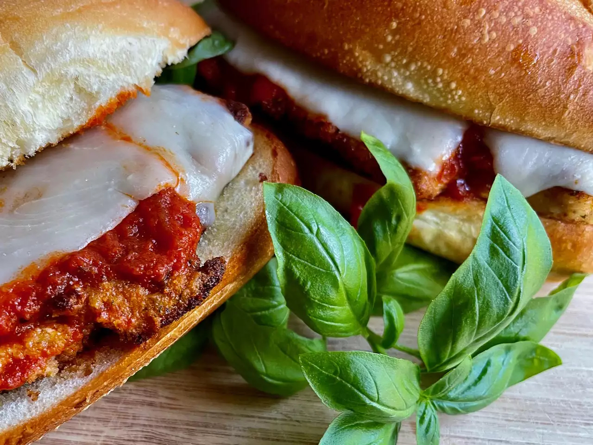

Chicken Parm Sub

Description
This is an easy to make recipe that takes about 5 minutes to prepare and about 30 minutes to cook.
As its name suggests it's a sub containing chicken and parmesan among other delicious stuff.
Ingredients
- cooking spray
- 4 frozen breaded chicken breast fillets
- 1/2 cup freshly grated Parmesan cheese
- 1 (16 ounce) package frozen garlic bread, thawed
- 1 cup tomato sauce or marinara sauce
- 4 slices provolone cheese
- 12 fresh basil leaves, or to taste
- aluminum foil
Steps
-
Preheat the oven to 425 degrees F (220 degrees C).
Spray a baking pan with vegetable oil spray.
-
Place frozen chicken fillets on the prepared pan and bake for 10 to 12 minutes.
Turn chicken, sprinkle 2 tablespoons Parmesan cheese on each fillet, and bake until crispy, an additional 10 to 12 minutes.
-
Slice garlic bread into 4 equal portions.
Open each portion and place garlic side up on a baking sheet.
Warm garlic bread in the oven about 5 minutes.
-
To assemble the sandwiches, place a chicken fillet on a piece of garlic bread, spoon 1/4 cup tomato sauce or marinara sauce on top of the chicken, and lay a slice of provolone on top of the sauce.
Place 3 basil leaves, or more to taste, on each sandwich, and top with the other half.
-
Wrap each sandwich in foil and return to the oven until the cheese is melted, 5 to 8 minutes.
Unwrap and serve warm.